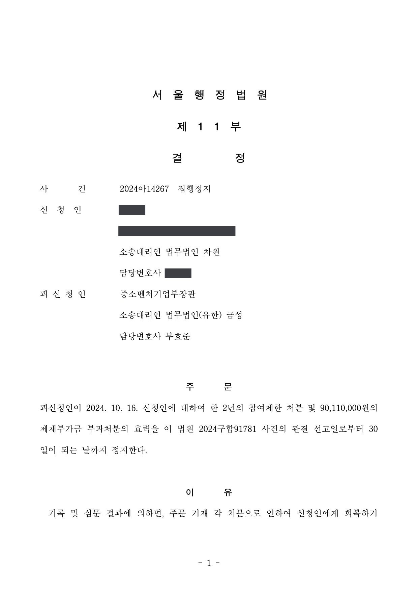

연구자권익보호위원회 재검토 후 처분사유가 변경된 국가연구개발사업 제재처분의 무효확인 소송
서울행정법원 2024구합91781 · 2024아14267 · 담당변호사 부효준
판결문


사건의 요지
중소기업 기술혁신개발사업 과제가 수행기업의 회생절차 개시 뒤 특별평가에서 중단(불성실) 판정을 받아 제재처분으로 이어진 사건입니다. 최초 처분사유가 연구자권익보호위원회 재검토를 거치며 변경된 경우 절차적 하자가 있는지, 처분이 무효인지가 쟁점이었습니다.
자세히 보기 (법무법인 금성 성공사례)사건의 주요 내용
중소기업 기술혁신개발사업(시장확대형) 과제에 선정되어 2년간 약 4억 8천만 원을 지원받기로 협약한 기업이, 과제 시작 약 8개월 뒤 법원에 회생을 신청하고 약 10개월 뒤 회생개시결정을 받았습니다. 그 무렵 전문기관은 특별점검을 거쳐 '협약 사업계획서 대비 연구수행 과정이 확인되지 않는다'는 이유로 과제를 특별평가 대상으로 통보하였고, 특별평가위원회는 과제를 '중단(불성실)'으로 판정하였습니다. 기업의 이의신청은 받아들여지지 않았습니다.
전문기관은 제재처분평가단 심의를 거쳐 「국가연구개발혁신법」 제32조 제1항 제1호(연구개발과제의 수행 과정과 결과가 극히 불량한 경우)를 사유로 2년의 참여제한과 약 9천만 원의 제재부가금을 사전통지하였습니다. 기업이 연구자권익보호위원회에 재검토를 요청하자, 위원회는 사전통지한 처분을 유지하는 것이 타당하다는 의견과 함께 같은 항 제2호(협약에 따른 의무를 고의로 이행하지 아니한 경우)의 적용도 검토하라고 권고하였고, 처분청은 이를 받아들여 제2호를 근거로 2년 참여제한과 제재부가금 부과처분을 하였습니다. 기업은 이 각 처분의 무효확인을 구하는 소송을 제기하였습니다.
쟁점
- 사전통지 당시의 처분사유(제32조 제1항 제1호)와 다른 사유(같은 항 제2호)로 처분하면서 다시 사전통지와 의견제출 기회를 주지 않은 것이 처분을 무효로 할 정도의 절차적 하자인지
- 회생절차 개시로 과제 수행에 차질이 생긴 것일 뿐 협약상 의무를 '고의로' 이행하지 않은 것은 아닌지
- 회생절차 중에도 과제를 수행하여 특허등록 등 성과를 냈다는 사정이 감경사유가 되는지, 처분이 비례원칙에 어긋나 재량권을 일탈·남용한 것인지
법원의 판단
법원은 행정절차법 제21조·제22조와 대법원 판례(2000. 11. 14. 선고 99두5870 판결, 2018. 3. 13. 선고 2016두33339 판결 등)의 법리를 전제로, 사전통지 당시와 다른 조항으로 처분하였더라도 이 사건에서는 처분상대방의 의견진술권이나 방어권 행사에 실질적인 지장이 없었다고 보아 절차적 하자를 인정하지 않았습니다. 특별평가에 대한 이의신청과 연구자권익보호위원회 재검토 요청 단계에서 기업이 연구수행의 과정과 결과에 관하여 충분히 소명하였고, 이는 제2호의 '협약에 따른 의무를 이행하였는지 여부'에 관한 소명으로도 볼 수 있다는 것입니다.
고의 여부에 관하여는, 회생절차 개시결정 당시 이미 전체 연구개발 기간 가운데 10개월이 지나 있었고 특별점검도 그 직후에 이루어져 점검 대상이 주로 개시결정 이전의 연구수행 내역이었으므로, 회생개시결정만으로 고의가 없었다고 볼 수 없다고 판단하였습니다. 재량권 일탈·남용 주장도 배척하여 원고의 청구를 모두 받아들이지 않았고, 함께 신청된 집행정지 사건도 같은 취지로 결정되었습니다.
행정청이 침해적 행정처분을 함에 있어서 당사자에게 위와 같은 사전 통지를 하거나 의견 제출의 기회를 주지 아니하였다면 그 처분은 위법하여 취소를 면할 수 없으나(대법원 2000. 11. 14. 선고 99두5870 판결 등 참조), 당해 행정처분의 성질에 비추어 사전 통지나 의견청취가 현저히 곤란하거나 명백히 불필요하다고 인정되는 경우에는 그러하지 아니하다(대법원 2001. 4. 13. 선고 2000두3337 판결, 대법원 2009. 2. 12. 선고 2008두14999 판결 등 참조).
한편 행정청이 처분절차에서 관계법령의 절차 규정을 위반하여 절차적 정당성이 상실된 경우에는 해당 처분은 위법하고 원칙적으로 취소하여야 한다. 다만 처분상대방이나 관계인의 의견진술권이나 방어권 행사에 실질적으로 지장이 초래되었다고 볼 수 없는 특별한 사정이 있는 경우에는, 절차 규정 위반으로 인하여 처분절차의 절차적 정당성이 상실되었다고 볼 수 없으므로 해당 처분을 취소할 것은 아니다(대법원 2018. 3. 13. 선고 2016두33339 판결 등 참조).
서울행정법원 2024구합91781 판결 이유 '나. 절차적 위법 여부 — 1) 관련 법리'
비록 원고가 사전 통지 당시 처분의 근거로 국가연구개발혁신법 제32조 제1항 제2호를 통보받지는 못하였으나, 원고는 이의신청 및 재검토요청 단계에서 연구개발과제의 수행과정과 결과가 극히 불량한 경우에 해당하지 않는다고 주장하면서 자신이 수행한 연구과정과 그 결과에 관하여 충분히 소명하였고, 이는 국가연구개발혁신법 제32조 제1항 제2호의 '협약에 따른 의무를 이행하였는지 여부'에 관한 소명으로도 볼 수 있다.
서울행정법원 2024구합91781 판결 이유 '2) 사전 통지 절차의 위법 여부'
이 사건 회생절차 개시결정일 당시는 이미 전체 연구개발 기간 중 10개월이 경과한 시점이었던 점, 이 사건 과제에 대한 특별점검이 위 개시결정일로부터 불과 약 1개월 후에 실시되어 해당 점검의 대상은 주로 개시결정 이전 약 10개월간의 연구수행 내역 및 성과에 집중되었을 것으로 보이는 점 등을 종합하면, 회생절차의 개시가 위 특별점검 결과에 미친 영향은 미미할 것으로 보인다. 따라서 원고에 대하여 회생개시결정이 있었다고 하더라도 위와 같은 사정만으로 원고가 이 사건 협약을 불이행한데 고의가 없었다고 할 수 없으므로, 원고의 이 부분 주장은 이유 없다.
서울행정법원 2024구합91781 판결 이유 '바)' 부분
※ 판결 이유 가운데 이 사건의 판단 기준이 된 부분을 그대로 옮긴 것으로, 당사자 이름 등은 가렸습니다.
이 사건이 보여 주는 것
국가연구개발 제재처분은 사전통지 → 연구자권익보호위원회 재검토 → 제재처분의 순서로 이루어지고, 재검토 과정에서 처분사유의 조항이 바뀌는 일이 실제로 일어납니다. 이 판결은 조항이 바뀌었다는 사정만으로 처분이 무효가 되거나 취소되지는 않으며, 이의신청과 재검토 요청 단계에서 어떤 사실을 얼마나 소명하였는지가 절차적 하자 판단의 기준이 된다는 점을 보여 줍니다.
처분을 받은 연구개발기관으로서는 재검토 요청서에 연구수행의 과정과 결과, 협약상 의무 이행 여부를 처음부터 빠짐없이 적어 두는 것이 뒤의 소송에서도 중요합니다. 또한 회생절차 개시처럼 기업의 사정으로 과제 수행이 어려워진 경우에는, 그 사정이 생긴 시점과 특별점검의 대상 기간이 겹치는지가 '고의' 판단을 좌우할 수 있습니다.
비슷한 처분을 받으셨다면
국가연구개발 제재처분은 사전통지를 받은 날부터 20일 이내에 재검토 요청 의견을 내고, 처분이 있음을 안 날부터 90일 이내에 취소소송을 제기해야 합니다. 처분서나 사전통지서를 받은 날짜부터 확인해 드립니다.